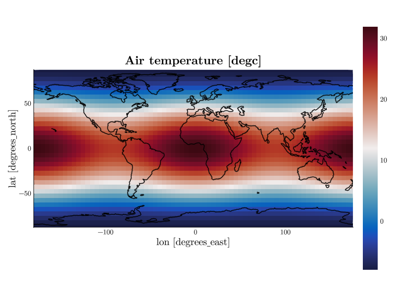

Getting Started
This page walks you through a first session: opening a file, reading the dataset overview, and making a plot. All following examples use a small synthetic weather dataset demo.nc; every output and figure you see in this manual is produced by the real application at documentation build time.
Opening a file
Pass one or more NetCDF files on the command line (see Installation for how to set up the cdfviewer command):
cdfviewer demo.ncZarr stores work the same way — pass the store directory instead of a file (cdfviewer output.zarr). A single zarr store is supported per session; opening multiple paths at once (multi-file aggregation) is NetCDF-only. Only zarr format v2 can be read: v3 stores (zarr.json metadata) are detected, but the Julia zarr stack does not support them yet, so CDFViewer refuses them with a clear error.
When the file is opened, CDFViewer prints a compact overview of the dataset — the dimension sizes, a coordinate block with units and value ranges, and a table of the data variables:
demo.nc — dims: lon:72 lat:36 time:24 lev:10
title: CDFViewer documentation demo dataset
Coordinates:
lon [degrees_east] -180 … 175 (72)
lat [degrees_north] -87.5 … 87.5 (36)
time 2000-01-01 00:00:00 … 2000-01-24 00:00:00 (24)
lev [km] 0 … 18 (10)
Variable │ Dimensions │ Units │ Long name
─────────────┼──────────────────┼───────┼───────────────────
temperature │ lon,lat,time,lev │ degc │ Air temperature
humidity │ lon,lat,time │ % │ Relative humidity
pressure │ lon,lat │ hpa │ Surface pressureAfter the overview, a CDFViewer> prompt appears. This is the command REPL, the keyboard-driven way to control the viewer. You can reprint the overview at any time with the overview command, or suppress it at startup with --no-summary.
Your first plot
Making a plot takes three choices: a variable (v), the plot axes (x, y, z), and a plot type (p). Let's plot a temperature map:
CDFViewer> v temperature
[ Info: Selected: temperature
CDFViewer> x lon
[ Info: Selected: lon
CDFViewer> y lat
[ Info: Selected: lat
CDFViewer> p heatmap
[ Info: Selected: heatmapAs soon as a valid plot type is selected, the figure window opens:

Every command completes the moment you press Enter — the plot updates live. Type help for the full command list, or press TAB anywhere for completion (commands, variable names, plot types, and keyword arguments are all completed).
Fixing the remaining dimensions
Our temperature variable has four dimensions but the heatmap shows only lon and lat — the remaining dimensions lev and time are fixed at their first index. Change them with isel (by index) or sel (by coordinate value):
CDFViewer> isel time 12
[ Info: → time: 2000-01-12 00:00:00
CDFViewer> sel lev 4.0
[ Info: → height: 4 kmsel snaps to the nearest coordinate value, so you don't have to know the exact grid points.
Exploring with the mouse
The figure window is fully interactive:
- Hover over the data to inspect it — a tooltip shows the exact value under the cursor.
- Scroll to zoom, right-drag to pan, left-drag to zoom into a rubber-band selection, and Ctrl + left-click to reset the view.
- In 3D plots (
surface,wireframe,volume,contour3d), left-drag rotates the camera instead.
On geographic maps, drag-panning is disabled by default so the projection stays put; unlock it with the moveable=true keyword — see Customizing Plots.
The two windows
CDFViewer manages two windows: the figure window with the plot, and an optional menu window with dropdown menus, sliders, and buttons that mirror every REPL command. Open the menu with the menu command (or start with --menu); see The Menu Window.
Where to go next
- The Command REPL — history, completion, and line editing.
- Selecting Data — variables, axes, and coordinates in depth.
- Plot Types — all nine plot types with examples.
- Customizing Plots — colormaps, labels, and map projections.
- Animation and Playback — play a dimension like a movie.
- Saving and Recording — export figures, videos, and sessions.